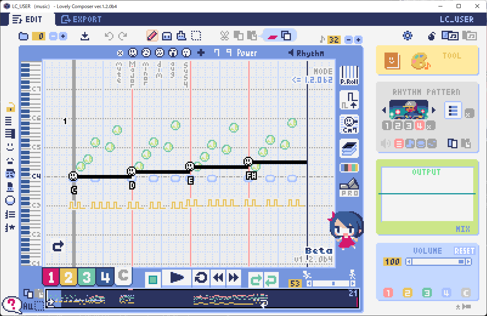

Lovely Composer 公式チュートリアル¶
チュートリアル（入門編）¶
作曲をしたことがない方や、ラブリーコンポーザ（以後ラビコン）を初めてさわる方を対象に、基本的な使い方をひとつひとつ説明します。 説明を読むだけではなく、自分で実際にさわりながら順番に進めてみましょう!
ソフトを起動する¶
画面の説明¶
サンプル曲を聴いてみる!¶
ラブリーコンポーザには、最初からサンプル曲が数十曲入っています。
画面の下側にある再生ボタン（右向きの三角マーク）を左クリックで押してみましょう。サンプル曲が再生されるはずです。
もし音が鳴らない場合は、以下の点を確認してみてください。
パソコン自体の音量が小さかったりミュート（消音）になっていないか確認して、ミュートを解除したり音量を上げてください。
OSのサウンドデバイス設定で、音が鳴るデバイスを選択してください。その後ラビコンを再起動してください。
外部スピーカー等がある場合はスイッチが入っているかを確認して、音量を上げてください。
うまく曲が再生されたら、曲選択ボタンの + ボタンを押して別の曲を順番に聞いてみましょう! ラビコンでどんな音や曲が作れるのかがなんとなく分かると思います。
停止は停止ボタン（四角い記号）です。
音を鳴らして遊ぶ¶
新しい曲のつくりかた¶
※サンプル曲専用フォルダを開いているなどで、曲番号が赤く表示されている場合、自分で作った曲が保存できませんので、 表示が黄色くなっていること（フォルダLC_Userユーザーフォルダを選択していること）を確認してください。
まずは、曲番号0番を選択しましょう。（1番でも2番でも好きな番号で構いません）
次に、爆弾ボタンを押すと、轟音とともに曲データが白紙の状態に戻ります。 （サンプル曲はすべて、同じ曲がサンプル曲用フォルダに入っていますので、消しても大丈夫です。）
適当に音を並べてみる¶
画面上の鉛筆ツールが選択されていることを確認して、 音色一覧が画面上側にありますので、左から順番に左クリックしてみましょう。 それぞれの音色で音が鳴ります。
好きな音色
再生ボタンの右にある「1ページループ」ボタンを押して緑色にしてから、再生してみましょう。
楽譜上に置いたとおりに、順番に音が鳴ります。 1ページループが有効なので、右端まで行くと、最初に戻って再生されます。
楽譜上で右クリックすると、楽譜には音符を入力せずに、いま選択している音色と音程の音が試聴できます。
楽譜上にある音符の上で右クリックすると、その音色を選択する（スポイト）することができます。
ループ再生して実際の音を聴きながら音符を編集することで、楽譜が読めなくても作曲をすることができます。
いろいろ適当に描いてみたり、知っている曲のメロディーを自分で打ってみるのも楽しいかもしれません。
五線譜に慣れている方は、背景を五線譜風の表示にすることもできます。
音符の伸ばし方¶
音色の一覧には、伸びる音と伸びない音があります。
波形アイコンの音色やUFOなどは、伸びる音で、横に並べるだけでOKです。
鍵盤アイコンの音色などは、伸びません。
同じ波形の音色と組み合わせて、伸びたように聴かせることができます。
パート¶
音楽を何人かで演奏するように、ラビコンでも複数パートの音を同時に演奏することができます。
ラビコンでは、自由に使えるパートが4つ、コード専用のパートが1つ使えます。 （これは8bitゲーム機の仕様にある程度近いものです。） 各パートは色分けされているので、再生時の楽譜を見ているとなんとなくわかると思います。 音色は音符ごとに自由に変えることができます。
自分で曲を作ってみよう!¶
新しい曲のつくりかた¶
※サンプル曲専用フォルダを開いているなどで、曲番号が赤く表示されている場合、自分で作った曲が保存できませんので、 表示が黄色くなっていること（フォルダLC_Userユーザーフォルダを選択していること）を確認してください。
まずは、曲番号0番を選択しましょう。（1番でも2番でも好きな番号で構いません）
次に、爆弾ボタンを押すと、轟音とともに曲データが白紙の状態に戻ります。 （サンプル曲はすべて、同じ曲がサンプル曲用フォルダに入っていますので、消しても大丈夫です。）
コードを鳴らそう!¶
まずは、曲番号1番を選択しましょう。そして爆弾ボタンで曲データをクリアします。
スケール機能¶
ファイルの保存¶
作った曲データの保存は、オートセーブ式で、曲移動時やアプリの終了時に自動的に保存されるようになっています。 保存ボタンを押した場合は、その場で曲データがファイルに書き込まれます。万一のために押しておいた方が安心かもしれません。
実際の曲データは、フォルダ/00.jsonlファイルに保存されています。
完成!¶
ここまでで、あなたのオリジナル曲が1つ完成しているはずです。 できた曲は誰かに聞いてもらったり、何かに使ってみたくなりますね。
ということでここからはその説明です。
活用編¶
音声ファイルの出力（エクスポート）¶
動画をアップしよう!¶
LovelyComposer タグをつけると、他の人に見つけてもらいやすくなるのでおすすめです。
作った曲をゲームで使ってみよう!¶
ラビコンのWave出力 RPGツクールやUnityのイントロループタグに一部対応しています。
曲データファイルを共有しよう!¶
曲の設定¶
曲の長さ ページ数
下側の項目は、今回は気にしなくて大丈夫です。 （詳しくは機能説明を参考にしてください）
プロ・モード¶
初心者のうちは、ツールの機能はシンプルな方が分かりやすいのですが、作曲が上達してくると、より高度な機能や表現力がどうしても欲しくなってくる場合があります。ラビコンでは両方のユーザに対応するために、プロ・モードを用意しています。
PROスイッチをONにしましょう。 ちょっと難しくなりますが、音量やパンを指定できるなど、 8bitゲーム機とかなり近いレベルの表現力で作曲ができるようになります。
PROを使うと偉いというわけではなく、細かく指定できる分、手間も増えますから、そこまで不要なときはプロモードをOFFにしましょう。 かえって作曲に専念できる場合もあると思います。